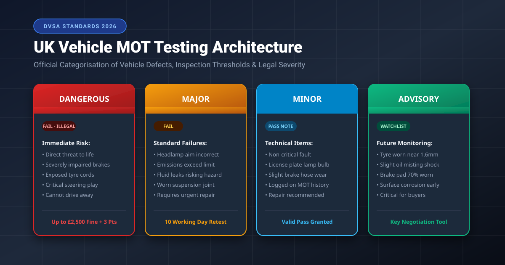
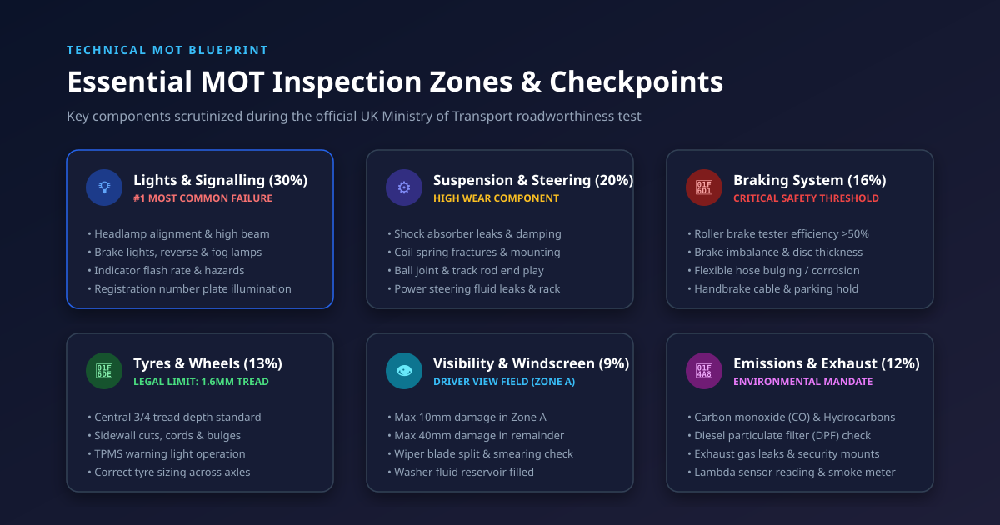
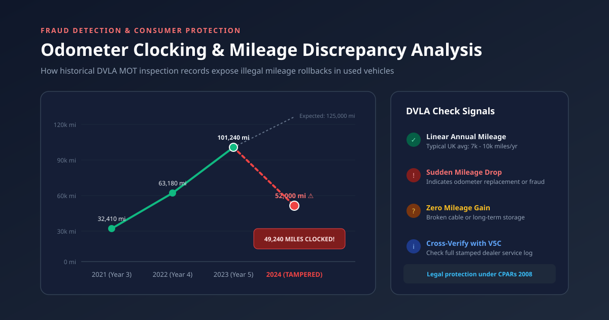
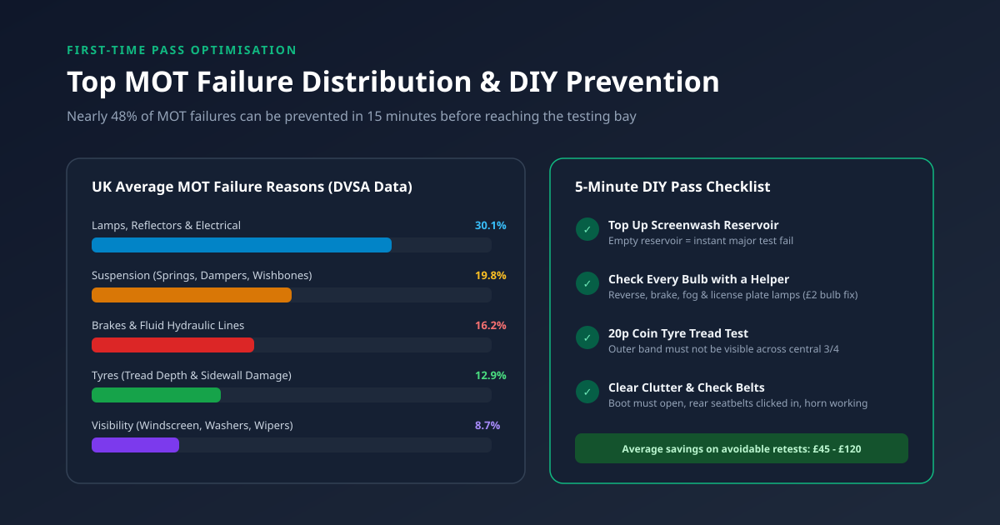
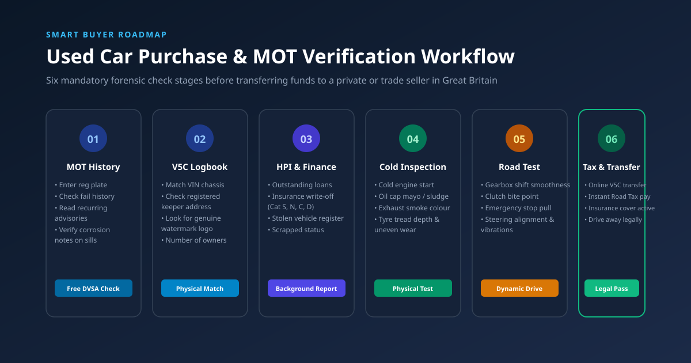
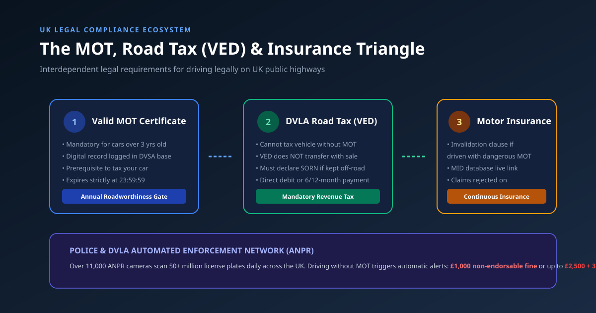

1. Historical Evolution of the UK MOT Test: From 1960 to Modern 2026 Digital Standards
The United Kingdom’s Ministry of Transport test, universally abbreviated as the MOT test, represents one of the world's most sophisticated and rigorously enforced national automotive safety regimes. First introduced under the visionary stewardship of Minister of Transport Ernest Marples pursuant to the Road Traffic Act 1960, the original test was modest in scope, applying solely to vehicles ten years of age or older and evaluating a rudimentary trio of safety metrics: braking performance, steering articulation, and basic lighting functionality. In an era characterised by rudimentary metallurgy, drum braking systems, and rapid corrosion vulnerabilities, early failure rates exceeded 50%, highlighting an acute public safety crisis on post-war British roads.
Recognising the rapid acceleration of vehicle speeds, rising traffic densities, and significant disparities in private vehicle maintenance, the UK Parliament progressively compressed the initial testing age threshold. In 1961, the threshold was reduced to seven years; in 1967, it was further lowered to three years, establishing the modern "3-year rule" (or 1 year for private hire taxis, ambulances, and passenger vehicles exceeding eight passenger seats) that remains the baseline statutory framework across England, Scotland, and Wales today under Section 47 of the Road Traffic Act 1988.
The technological transformation of the inspection regime accelerated exponentially with the dawn of digital databases. Prior to 2005, MOT compliance relied exclusively upon physical, paper-based certificates (the historic green VT20 pass certificate and red VT30 refusal slip). This paper-dependent era was plagued by organised criminal counterfeiting, widespread fraudulent stamping, and unregulated "phantom passes" where unscrupulous backstreet garages issued documentation without the vehicle ever crossing an inspection pit. Between 2005 and 2006, the Driver and Vehicle Standards Agency (DVSA)—then operating as VOSA—implemented the nationwide MOT Computerisation Project. This pivotal migration linked all 23,000+ independent, authorized vehicle testing stations (VTS) to a centralized, encrypted government mainframe via secure terminal access.
In May 2018, the UK enacted the most comprehensive overhaul of the testing framework in half a century by transposing European Union Directive 2014/45/EU into domestic legislation. This landmark reform abolished the legacy binary pass/fail paradigm, introducing a nuanced, safety-prioritised four-tier defect classification hierarchy: Dangerous, Major, Minor, and Advisory. Simultaneously, testing protocols for compression-ignition (diesel) passenger cars were substantially tightened: any diesel vehicle factory-fitted with a Diesel Particulate Filter (DPF) that emits visible smoke of any colour, or shows forensic evidence of casing slicing, gutting, or biological bypass, triggers an automatic refusal of certification.
Entering 2026, the DVSA testing infrastructure has entered the age of connected diagnostics. Modern testing bays feature connected roller brake testers (RBT) and connected decelerometers that transmit unadulterated, real-time braking efficiency calculations directly into the DVSA central database via secure application programming interfaces (APIs), entirely eliminating manual data entry tampering by rogue technicians. Concurrently, public access to historical MOT data has revolutionized consumer rights, allowing prospective buyers to inspect decades of testing notes, mileage accumulations, and inspector advisories with a single tap of a smartphone.
2. The Legal Framework: Road Traffic Act 1988 Mandate & Statutory Responsibilities
The statutory obligation to maintain a valid MOT test certificate is anchored primarily in Section 47 of the Road Traffic Act 1988. Under this statute, it is a criminal offence to use, or cause or permit to be used, any motor vehicle on a road or public highway in Great Britain unless an MOT test certificate has been issued within the preceding twelve months. Unlike vehicle excise duty (road tax), which is an administrative taxation levy, the MOT requirement is a non-negotiable condition of roadworthiness designed to protect life, property, and environmental integrity.
Crucially, motorists frequently conflate the possession of a valid MOT certificate with conclusive proof of roadworthiness. British jurisprudence establishes clearly that an MOT pass certificate is legally valid only at the precise moment of inspection. The certificate serves as an official confirmation that, at the exact date and hour the testing technician completed the prescribed assessment routine, the vehicle satisfied the minimum statutory thresholds stipulated in the DVSA MOT Inspection Manual. It does not constitute a mechanical warranty, an endorsement of future durability, or a legal defence if the vehicle subsequently develops a critical defect.
Legal Precedent: Section 40A vs. Section 47
A vehicle possessing ten months of remaining MOT validity can still result in a criminal prosecution under Section 40A of the Road Traffic Act 1988 ("Using a vehicle in a dangerous condition") if driven with severely compromised safety components (such as bald tyres below 1.6mm or fractured suspension springs). While Section 47 carries a maximum fine of £1,000 without penalty points, Section 40A constitutes an endorsable criminal charge carrying up to £2,500 in fines for passenger cars (£5,000 for commercial goods vehicles), mandatory 3 penalty points per defective component, and discretionary driving disqualification.
Statutory exemptions under Section 47 are remarkably narrow. Beyond vehicles under three years of age from original registration, exemptions are strictly limited to:
- Historic Vehicles: Vehicles constructed or first registered more than 40 years prior to the current calendar date, provided they have not undergone "substantial modifications" to their chassis, steering, suspension, or powertrain within the previous 30 years (submitted via DVLA declaration form V112).
- Electrically Propelled Goods Vehicles: Specifically limited to historic low-speed delivery milk floats and specialized industrial haulers first registered before 2015.
- Track Vehicles and Specialized Agricultural Equipment: Dedicated agricultural tractors, harvesters, and works trucks utilized exclusively on private farmland or within statutory road-crossing distance limits.
- Crown and Police Vehicles: Certain specialized vehicles operated directly by armed forces personnel or designated police constabularies with internal statutory testing facilities approved by the Secretary of State.
3. Defect Severity Classifications: The 2018–2026 DVSA Structural Hierarchy
Prior to May 2018, vehicle defects were evaluated under a binary structure: an item was either a pass or a fail, supplemented by subjective "Advisory notices" at the discretion of the nominated tester. This system suffered from substantial regional variance, where one garage might issue an advisory for worn brake friction material while another might deem it an outright failure. To harmonize UK standards with rigorous international criteria, the DVSA established the four-tier architectural matrix illustrated in Figure 1.0 below.

3.1 Dangerous Defects: Immediate Road Prohibition & Legal Consequences
A defect is formally categorized as Dangerous when it constitutes a direct, immediate risk to road safety or causes severe, catastrophic damage to the environment. When a tester identifies a dangerous defect, an MOT Refusal Notice (Form VT30) is generated instantaneously.
The most critical legal reality surrounding a Dangerous defect is the immediate cessation of the right to drive. A widespread urban myth persists among British drivers that if an MOT is conducted prior to the expiry of the previous certificate, an owner may legally continue driving the car until the old certificate reaches its calendar expiry. Under DVSA statutory guidance and Section 40A of the Road Traffic Act, this assumption is false. Once an authorized tester enters a Dangerous defect into the central database, the car is legally branded unroadworthy. Driving that vehicle away from the test station onto any public carriageway—even to travel home—constitutes a serious criminal offence, exposing the motorist to an on-the-spot fine of up to £2,500, 3 penalty points per defect, and potential vehicle impoundment by traffic police. The vehicle may only leave the premises on the bed of a professional recovery flatbed truck or after remedial repairs have been completed and certified.
3.2 Major Defects: Test Failure Requiring Statutory Rectification
A Major defect represents an item that may impair the safety of the vehicle, put other road users at risk, or produce emissions exceeding legal environmental limits, but does not present an immediate, catastrophic threat to human life. Examples include a headlight bulb failure on dipped beam, an anti-lock braking system (ABS) malfunction indicator light illuminated on the dashboard, a worn ball joint with measurable excess play, or diesel particulate matter readings exceeding manufacturer plate values.
A vehicle with Major defects fails the MOT test and receives a VT30 refusal slip. Unlike Dangerous defects, however, if the vehicle’s existing MOT certificate remains valid in terms of calendar date, the driver may legally drive the vehicle to an alternative repair facility or to a pre-booked retest appointment, provided the vehicle is not in an intrinsically dangerous state under common law principles.
3.3 Minor Defects: Certified Pass with Official Remedial Recording
Introduced in 2018, Minor defects describe technical faults that do not have a significant effect on the vehicle's road safety or environmental impact. When a car exhibits only minor defects, it is granted an official MOT Pass Certificate (Form VT20). However, the minor defect is permanently recorded in the DVSA public database and printed directly on the certificate document. Typical examples include a single blown registration plate lamp (provided the second illumination lamp remains functional), slight damage to a non-critical rubber dust boot that has not yet permitted grease contamination, or brake fluid level marginally below the maximum reservoir marking.
3.4 Advisory Notices: The Strategic Early Warning System
An Advisory notice is not a statutory defect; rather, it is formal technical guidance provided by the inspecting engineer regarding components that are currently legal and functional, but are displaying observable wear, degradation, or fatigue indicating that replacement or professional servicing will be necessary in the near future.
For used car buyers and vehicle owners, the advisory section of an MOT history report is arguably the most valuable predictive diagnostic tool. Common advisories include: "Brake pads wearing thin (estimated 80% worn)", "Nearside front tyre worn close to legal limit (recorded at 2.1mm)", or "Offside rear subframe exhibiting light surface corrosion". Cross-referencing annual advisory trends exposes whether a previous owner practiced diligent preventative maintenance or habitually neglected impending mechanical failures until the vehicle finally collapsed into a major failure.
4. The 6 Core MOT Inspection Zones: In-Depth Engineering Blueprint
The official DVSA MOT Inspection Manual categorises the entire vehicle into six discrete engineering operational zones. To demystify the comprehensive technical procedure, Figure 2.0 details each operational sector, its failure risk contribution based on millions of historic test records, and the mechanical checkpoints scrutinized during the examination.

4.1 Zone 1: Lighting, Reflectors & Electrical Architecture (30.1% Failure Contribution)
Statistical data compiled across more than 30 million annual UK MOT tests consistently demonstrates that lighting defects represent the single greatest cause of initial test failure. Testing protocols in this zone encompass far more than verifying whether bulbs illuminate:
- Optical Headlamp Beam Alignment: The tester employs an optical beam-setting apparatus calibrated precisely to the vehicle's axle height. Headlamps must project light within strict cut-off gradient angles to prevent blinding oncoming traffic while ensuring adequate carriageway illumination. Misaligned LED and Xenon HID units frequently fail due to dislodged internal reflectors or faulty automated leveling actuators.
- Colour Integrity and Lens Condition: Turn signals must emit pure amber light. Sunlight-induced UV degradation frequently bleaches amber-coated indicator bulbs to pure white, generating an immediate failure. Lenses cracked sufficiently to permit water ingress or alter the beam pattern are rejected.
- Electrical Wiring Loom and Battery Security: The 12-volt auxiliary and primary traction batteries must be securely fastened. Loose battery trays or battery terminals lacking insulation covers that present a short-circuit fire hazard constitute major defects.
4.2 Zone 2: Steering, Suspension & Structural Dynamic Links (19.8% Failure Contribution)
Subjected to relentless impacts from potholes, speed cushions, and road salt de-icing chemicals, suspension components undergo severe mechanical fatigue. Testers conduct dynamic wheel-shaker tests and visual pit inspections to evaluate:
- Helical Coil Springs & Leaf Packs: Spring fractures frequently occur at the extreme top or bottom coil pig-tail, where moisture collects in the lower spring cup. A fractured spring constitutes an automatic major or dangerous failure due to the risk of tyre puncture at highway velocities.
- Hydraulic and Gas Shock Absorbers: Dampers exhibiting fluid leakage that runs down the body of the strut (beyond harmless light misting) are failed due to reduced road contact control and brake stability.
- Ball Joints, Bushes & Anti-Roll Bar Links: Rubber bushes experiencing de-bonding, tearing, or excessive play allow uncommanded toe/camber angle deviations, causing severe handling instability and accelerated tyre scrub.
4.3 Zone 3: Braking Efficiency, Balance & Hydraulic Integrity (16.2% Failure Contribution)
The braking evaluation represents the most electronically quantitative phase of the MOT test. Testing is performed using computer-monitored Roller Brake Testers (RBT) or calibrated decelerometer devices (such as Bowmonk units for permanent four-wheel-drive vehicles):
- Service Brake Efficiency: The total calculated braking force generated across all four wheels must equal or exceed 50% of the vehicle's calculated gross design weight for modern vehicles (or 58% for dual-circuit commercial classes).
- Parking (Handbrake) Efficiency: The mechanical or electronic parking brake must achieve a minimum calculated efficiency of 16% of vehicle gross weight.
- Axle Brake Imbalance: On any steered axle, the disparity in braking force between the nearside (left) and offside (right) wheels must not exceed 30%. Significant imbalance indicates seized caliper slide pins, glazed friction material, or fluid contamination, causing violent vehicle pulling during emergency braking.
- Hydraulic Piping and Flexible Hoses: Steel brake lines subjected to ferrous corrosion that causes flaking or wall-thinning are failed immediately. Rubber flexi-hoses are inspected for bulging under high pedal pressure, micro-cracking, or friction chafing against suspension members.
4.4 Zone 4: Road Wheels & Tyre Contact Patches (12.9% Failure Contribution)
As a vehicle’s sole point of contact with the road surface, tyres are subjected to zero-tolerance scrutiny:
- Legal Minimum Tread Depth: The statutory requirement for passenger cars in Great Britain mandates a minimum tread depth of 1.6 millimetres across a continuous band comprising the central three-quarters of the breadth of the tread, throughout the complete circumference of the tyre.
- Structural Integrity: Any bulge, bubble, tear, or lump caused by internal carcass separation (commonly caused by curbing or pothole strikes) represents an immediate Dangerous defect. Any cut exposing internal steel cords or ply fabric results in immediate failure.
- Tyre Pressure Monitoring Systems (TPMS): On vehicles first registered on or after 1 January 2012, an inoperative TPMS system or an illuminated amber TPMS malfunction warning light on the instrument cluster constitutes a Major failure.
4.5 Zone 5: Driver Visibility, Windscreen Glass & Mirrors (8.7% Failure Contribution)
The driver's field of vision is evaluated under strict geometrical zoning:
- Zone A (Direct Vision Swathe): A 290mm wide vertical band centred directly on the steering wheel centre within the swept sweep area of the windscreen wipers. Damage (stone chips, bullseyes, cracks) exceeding 10 millimetres in diameter within Zone A constitutes a Major fail.
- Rest of Swept Area: Damage exceeding 40 millimetres in diameter anywhere within the remainder of the wiper-swept windscreen area results in a failure.
- Wiper Blades & Washer Jets: Wiper blades that are split, missing, or smear the screen sufficiently to impede vision fail. Screenwashers must provide adequate liquid fluid to clear the screen; an empty washer fluid bottle is one of the most frustratingly avoidable automatic test failures in the UK.
4.6 Zone 6: Body Shell Integrity, Exhaust Emissions & Environmental Criteria (12.3% Failure Contribution)
This zone combines structural crashworthiness with environmental compliance:
- Prescribed Structural Areas (The 30cm Rule): Any load-bearing structural member, chassis rail, inner sill, suspension mounting point, seatbelt anchorage, or steering box mounting must be free from advanced structural corrosion within 30 centimetres of that mounting point. Corrosion is tested using the inspector's blunt corrosion assessment hammer; rust that yields to pressure or reveals perforations constitutes an automatic failure.
- Exhaust Emissions Opacity & Gas Analysis: Petrol engines are connected to an exhaust gas analyzer to measure carbon monoxide (CO), hydrocarbons (HC), and lambda air-fuel ratio equivalence. Modern Euro 6 diesels are tested via an optical opacity smoke meter; readings exceeding the manufacturer's VIN plate limit (frequently as low as 0.50 mâ»Â¹ or 0.20 mâ»Â¹ on late-model vehicles) indicate DPF degradation or injector failure.
5. Forensic Mileage Investigation: Identifying Odometer Fraud and Clocking
Automotive fraud investigators in the United Kingdom estimate that approximately 1 in every 14 used vehicles offered on the UK market has been subjected to illegal odometer tampering, colloquially termed "clocking". Clocking involves fraudulently reducing the recorded mileage display on a vehicle's digital instrument cluster or analog odometer drum to artificially inflate its commercial resale value. According to the UK National Franchise Dealers Association (NFDA) and consumer watchdogs, this illicit practice robs British motorists of over £800 million annually while dangerously masking severe structural and mechanical fatigue in critical steering, suspension, and engine timing components.
Prior to digital MOT records, clocking was exceptionally difficult for a retail consumer to prove. An unscrupulous seller could easily purchase counterfeit service stamps or discard logbooks to fabricate a low-mileage profile. Today, the DVSA centralized database provides an unalterable chronological audit trail. Figure 3.0 highlights the typical forensic signature of odometer manipulation when plotted across historical inspection intervals.

5.1 The Anatomy of Digital Mileage Manipulation
Modern vehicles record mileage data not merely within the instrument binnacle, but redundantly across multiple internal electronic control units (ECUs), including the engine management module, transmission control module (TCM), electronic stability control (ESC) processor, and smart key fob transponders. While inexpensive, handheld OBD-port "mileage correction" tools can rewrite the primary dashboard EEPROM chip in seconds, rogue operators frequently fail to synchronize secondary deep-memory modules.
When examining an online MOT history report, watch for three classic mathematical anomalies:
- Negative Step-Back Anomaly: The most obvious red flag occurs when an MOT test on 14 October 2023 records 84,200 miles, followed by an MOT test on 18 October 2024 recording 49,500 miles. This unmistakable 34,700-mile regression provides conclusive evidence of tampering or a catastrophic instrument cluster replacement that was not digitally recalibrated to genuine vehicle mileage.
- Mileage Stagnation Plateau: If a vehicle records 12,000 to 15,000 miles annually for its first four years of service, and then suddenly records an average of only 400 miles per year across the subsequent three years despite changing registered keepers, this plateau strongly suggests either an odometer disconnection device or seasonal clocking prior to each annual test.
- "Mileage Blocker" Devices (CAN-Bus Filter Tampering): High-tech mileage blockers are small microcontrollers spliced into the vehicle’s CAN-bus wiring harness behind the speedometer. These devices filter out 50% or 100% of speed sensor pulses sent to the odometer while allowing the digital speedometer to function normally. Cars equipped with these devices will show impossibly low annual mileage accumulations (e.g., 2,000 miles per year on a commuter diesel estate) despite obvious physical wear on pedal rubbers, seat bolsters, and steering wheel leather.
Clerical Errors vs. Malicious Fraud
Occasionally, a mileage discrepancy on an MOT history check results from innocent human typographical error by the testing technician. For instance, an inspector might accidentally enter 120,450 miles when the actual odometer read 102,450 miles, creating a temporary artificial "spike" that appears to drop at the next test. If this error is noticed within 28 calendar days of the test, the testing station can rectify it directly via the DVSA portal. Beyond 28 days, the owner must submit documentary evidence (diagnostic scans, stamped service books, photographic proof of odometer) directly to the DVSA Enforcement Unit to request a formal clerical amendment.
6. Deep Dive: The Top 10 Most Common MOT Failures and Engineering Root Causes
According to DVSA annual operational statistics, nearly 48% of all initial MOT failures are attributable to straightforward mechanical or electrical defects that could have been identified and rectified by the vehicle owner for minimal expense prior to booking the inspection. Figure 4.0 illustrates the empirical distribution of test failures alongside quick, 5-minute preventative interventions.

6.1 The 10 Primary Failure Vectors Detailed
1. Lighting and Signalling Misalignment & Inoperative Bulbs (30.1%)
Blown bulbs remain the single most prevalent cause of failure across the British fleet. Beyond simple filament burnout, common failures include fractured registration plate illumination housings, obscured high-level third brake lamps, and headlamps out of horizontal or vertical beam aim alignment. On modern xenon and LED headlamps, fractured internal plastic adjustment gears prevent automatic leveling motors from achieving correct datum, prompting an immediate failure.
2. Coil Spring Fractures & Damper Leakage (19.8%)
The UK road network features an estimated 1.5 million potholes, creating severe cyclic shock loads on suspension geometry. Coil springs typically snap at the base cup where salt and grit collect, grinding away the protective plastic coating and initiating stress corrosion cracking. Shock absorbers with compromised oil seals leak hydraulic fluid across the lower body, destroying rebound damping efficiency.
3. Brake Imbalance, Excessive Disc Wear & Flexi-Hose Deterioration (16.2%)
Brake calipers that stick on rusted guide pins cause uneven friction pad wear and excessive cross-axle braking disparity exceeding the 30% statutory threshold. Discs that fall below minimum manufacturer thickness or exhibit structural lip corrosion are condemned. Rubber hydraulic flexible hoses that exhibit micro-perishing, deep cracking, or swelling under hydraulic pressure are rejected due to catastrophic burst risk.
4. Tyre Tread Depth Below 1.6mm & Structural Sidewall Damage (12.9%)
Tyres worn beyond the 1.6mm legal limit—or displaying extreme "camber scrub" where the inner shoulder is worn smooth due to misaligned tracking—account for hundreds of thousands of failures. Sidewall bulges caused by pinching against granite curbs represent an immediate Dangerous defect.
5. Driver Visibility Obstructions & Perished Wiper Blades (8.7%)
Windscreen chips larger than 10mm located directly within Zone A fail. Furthermore, suction-cup smartphone mounts or dashcam brackets positioned within the driver's forward sweep arc are categorized as major vision obstructions. Wiper rubbers split at the edge or smeared across the glass are immediate fails.
6. Excessive Exhaust Emissions & DPF Tampering (6.5%)
High carbon monoxide (CO) or hydrocarbon (HC) readings on petrol cars typically indicate failed oxygen (lambda) sensors, faulty catalytic converters, or chronic engine misfires. On diesel models, any evidence that a Diesel Particulate Filter has been cut open and re-welded, or opacity smoke readings exceeding VIN plate limits, results in immediate refusal of a certificate.
7. Steering Rack Play, Track Rod Ends & Power Steering Fluid Leaks (4.8%)
Steering rack gaiters torn or split allow road grit to penetrate precision pinion gears, causing catastrophic scoring. Worn outer track rod ends that allow excessive free play at the road wheels cause vague steering feel and fail testing.
8. Structural Chassis Corrosion in Prescribed Zones (3.9%)
Rust holes within 30cm of structural suspension points, sills, and seatbelt anchorage plates severely compromise structural rigidity in an impact. Non-approved repairs—such as filling rust holes with expanding foam and painting over them—are swiftly identified by inspectors using assessment hammers.
9. Supplemental Restraint System (SRS) & Dashboard Warning Lights (3.2%)
Under modern DVSA regulations, any illuminated warning lamp indicating a malfunction in safety-critical systems—including ABS, electronic stability control (ESC), Supplemental Restraint Systems (airbags), or tyre pressure monitoring (TPMS)—constitutes an automatic Major failure.
10. Seatbelt Locking Mechanisms & Webbing Degradation (2.1%)
Seatbelt webbing frayed by pet chews, faded by heavy UV exposure, or displaying broken stitching fails. Inertia reel retractors that fail to pull webbing taut automatically or fail to lock under rapid deceleration are strictly condemned.
7. The Master Pre-MOT DIY Checklist: 45 Critical Verifications to Pass First Time
Conducting a thorough self-audit 48 hours before your vehicle enters the MOT inspection bay guarantees peace of mind and saves substantial sums on preventable re-test fees and diagnostic charges. This comprehensive 45-point checklist covers every accessible inspection point evaluated by DVSA technicians.
7.1 Exterior Lighting & Signalling Systems
- [ ] Dipped Beam Headlights: Both nearside and offside bulbs illuminate with equal intensity.
- [ ] High Beam (Main Beam) Headlights: Both high beams function, and the blue dashboard indicator illuminates.
- [ ] Front Sidelights / Parking Lamps: White LED or incandescent position lamps illuminate correctly.
- [ ] Front & Rear Turn Signals: All indicator lamps flash at a consistent rate between 60 and 120 cycles per minute.
- [ ] Hazard Warning Flashers: Operates correctly from the dashboard switch with the ignition turned completely off.
- [ ] Brake Lights: Have an assistant observe the rear while depressing the pedal. All three lamps (including centre high-mount) must illuminate instantaneously.
- [ ] Reversing Lamps: White reverse light illuminates when reverse gear is selected with ignition active.
- [ ] Rear Fog Lamp: High-intensity red rear fog lamp illuminates, and the yellow/orange dashboard warning light functions.
- [ ] Number Plate Illumination: Both registration plate lamps illuminate brightly without flickering.
- [ ] Lens Integrity: Check all lamp housings for cracks, moisture condensation, or bleached amber lenses.
7.2 Tyres, Wheels & Running Gear
- [ ] Tread Depth Inspection (The 20p Coin Test): Insert a standard British 20p coin into the tread grooves across the central 75% breadth. If the outer band of the coin is visible, the tyre is approaching or below 1.6mm and must be replaced immediately.
- [ ] Sidewall Carcass Check: Run your hand along inner and outer sidewalls to feel for lumps, bubbles, or deep cuts exposing cord.
- [ ] Wheel Rim Security: Ensure no wheel nuts/bolts are missing or loose, and alloy rims have no visible fractures.
- [ ] Matched Tyres on Axles: Verify that tyres on the same axle share the same construction type (e.g., radial vs. cross-ply) and compatible load ratings.
- [ ] Spare Tyre Protocol: Note that a spare wheel inside the boot is not tested; however, if a space-saver is mounted onto an axle for the test, the car will fail.
7.3 Driver View & Windscreen Architecture
- [ ] Zone A Damage Audit: Ensure no stone chips or cracks exceed 10mm directly in front of the steering wheel.
- [ ] Secondary Windscreen Damage: Ensure no chips or cracks exceed 40mm elsewhere within the wiper-swept area.
- [ ] Wiper Blade Edge Check: Run your finger along the wiper rubber. Any split, tear, hardening, or detaching blade fails.
- [ ] Screenwash Reservoir Top-Up: Fill the washer bottle to the brim with winter-grade screenwash concentrate. Verify washer nozzles spray the centre of the glass without clogging.
- [ ] Mirrors: Check interior rear-view mirror and both exterior wing mirrors for secure mounting, glass silvering degradation, or cracks obscuring rear vision.
- [ ] Dashboard Clutter Removal: Remove all phone mounts, air fresheners, and dashcams suction-cupped to the windscreen.
7.4 Cabin Interior, Seatbelts & Safety Systems
- [ ] Seatbelt Extension & Retraction: Pull all belts out completely to inspect for fraying or mildew, then let go to ensure they retract smoothly and quickly.
- [ ] Inertia Reel Lock Mechanism: Tug each belt sharply forward; the inertia reel must lock firmly.
- [ ] Buckle Engagement: Push each latch into its receiver; it must click positively and release easily with the red button.
- [ ] Horn Audibility: Press the horn firmly; it must produce a loud, continuous, single-pitch sound (musical novelty horns are illegal).
- [ ] Driver Seat Adjuster: The driver's seat must adjust forwards and backwards and lock securely in its runners.
- [ ] Door Latch Operation: All front and rear doors must open freely from both the inside and outside handles.
- [ ] Dashboard Warning Lamp Audit: Turn the ignition to Position II (engine off); verify ABS, Airbag, and Engine Management lights illuminate, then extinguish within 3–5 seconds after starting the engine.
7.5 Engine Bay, Fluid Levels & Underbody
- [ ] Engine Oil Level: Check dipstick level; testers may refuse to perform the high-RPM emissions test if oil is below the minimum mark or dangerously overfilled.
- [ ] Brake Fluid Reservoir: Ensure fluid level sits between the MIN and MAX lines.
- [ ] Power Steering Fluid: Ensure reservoir is filled to specification (for hydraulic assist systems).
- [ ] Battery Mounting Clamp: Grasp the 12V battery and attempt to shake it; it must have zero free movement in its tray.
- [ ] Fuel Filler Cap Seal: Open fuel flap; ensure the cap locks firmly and the rubber sealing ring is pliable and free of cracks.
- [ ] Exhaust System Security: Gently tap the tailpipe with your foot (when cold); ensure rubber hanging bobbins are intact and no rattles originate from inside the silencer box.
8. The Used Car Buyer's Master Playbook: Cross-Referencing MOT, V5C & HPI Data
Purchasing a second-hand vehicle in Great Britain without conducting a comprehensive forensic audit of its historical MOT records is one of the most perilous financial gambles a consumer can make. Every MOT test record forms an indelible legal snapshot of a vehicle's mechanical health, structural deterioration, and usage intensity. Figure 5.0 establishes the mandatory six-stage verification protocol every smart buyer must execute prior to signing a sales agreement or transferring funds.

8.1 Decoding the Narrative Within the Test History
A seasoned vehicle appraiser does not merely glance at whether a car currently holds a valid test certificate; they analyze the longitudinal narrative of how the vehicle was cared for across its entire operational lifespan.
- The "Clean Pass" vs. "Run to Failure" Profile: A vehicle that consistently passes every MOT test year after year on its first presentation—or records only minor advisories that disappear by the subsequent test—indicates a conscientious owner who adhered to proactive preventative servicing. Conversely, a vehicle that fails almost every test with multiple basic defects (blown bulbs, bald tyres, zero screenwash), followed by a re-test pass hours later, reveals an owner who treated maintenance as an afterthought, driving the car until it failed legally before spending the absolute bare minimum to get back on the road.
- Recurring Advisory Notifications: Pay special attention to advisories that appear across consecutive test years. For example, if a note states "Slight play in nearside front lower suspension ball joint" in 2022, 2023, and 2024, the owner has neglected that worsening mechanical joint for three years and 30,000 miles, accelerating wear on steering components, wheel bearings, and tyres.
- The Creeping Rust Trap (Structural Sills & Subframes): Corrosion advisories rarely improve on their own. If an advisory in 2023 notes "Surface corrosion on rear subframe", and by 2025 notes "Subframe significantly corroded but not seriously weakened", you are looking at an impending £800 to £1,500 subframe replacement or structural welding job within the next 12 to 24 months. Use this data directly to negotiate a substantial price reduction or walk away entirely.
8.2 Physical Cross-Referencing: The V5C Logbook & Chassis VIN Match
An online MOT check is only as reliable as the physical vehicle it matches. Unscrupulous car thieves and fraudsters routinely clone the identity of a legitimate vehicle by applying cloned registration number plates to a stolen vehicle of the exact same make, model, and colour. To avoid purchasing a cloned vehicle:
- Inspect the Physical V5C Registration Certificate: Ensure the document is the modern red/multi-colour V5C issued by the DVLA in Swansea. Hold it up to the light to confirm the official "DVL" watermark embedded directly in the paper fibres.
- Verify the 17-Character VIN / Chassis Number: Never rely solely on the sticker on the door pillar. Inspect the stamped metal VIN pressed directly into the steel chassis structure (typically visible beneath the windscreen glass, stamped into the engine bulkhead, or engraved on the floor under a carpet flap next to the driver's seat). Every single character must match the V5C logbook and the DVSA MOT database exactly.
- Check the 11-Digit V5C Reference Number: To view the exact location where an MOT was conducted on the official DVLA portal, enter the 11-digit document reference number from the current V5C logbook. If the seller refuses to let you view the logbook, terminate negotiations immediately.
9. The Legal Interlocking Triad: MOT, VED Road Tax, SORN & Motor Insurance
In Great Britain, operating a vehicle legally on the public highway requires the flawless synchronisation of three distinct statutory pillars: a valid MOT test certificate, an active Vehicle Excise Duty (Road Tax) record, and a compliant motor insurance policy. A failure or lapse in any one of these three interdependent elements instantly collapses the legal status of the remaining two, as demonstrated in Figure 6.0.

9.1 Why You Cannot Tax a Vehicle Without an MOT
Under the Vehicle Excise and Registration Act 1994, the DVLA electronic vehicle licensing system is directly integrated with the DVSA MOT database. When an owner attempts to tax a vehicle online, by automated phone line, or at a Post Office branch, the DVLA server performs an instantaneous, real-time query against the vehicle registration mark (VRM). If the vehicle is over three years old and does not possess a valid MOT certificate covering the date the tax commences, the transaction is automatically blocked.
This automated safeguard creates a severe catch-22 for motorists whose MOT has lapsed: without an MOT, they cannot renew road tax; and without road tax, the vehicle cannot be legally parked on a public road, even outside their own home!
9.2 Statutory Off Road Notification (SORN) Requirements
Under Continuous Insurance Enforcement (CIE) legislation, every registered motor vehicle in Great Britain must be continuously taxed and insured, even if it is not driven, unless a formal Statutory Off Road Notification (SORN) has been submitted to the DVLA. If your vehicle’s MOT expires and you do not intend to submit it for testing immediately, you must declare SORN online.
Declaring SORN carries strict physical conditions: the vehicle must be kept off the public highway entirely, stationed on private land, within a private garage, or on a private driveway. Parking a SORN-declared vehicle with any wheels touching a public road, public grass verge, or municipal parking bay exposes the registered keeper to an immediate £100 fixed penalty notice, liability for back-taxes, vehicle wheel-clamping, and court prosecution resulting in fines up to £2,500.
9.3 The Catastrophic Insurance Invalidation Risk
Motor insurance policies issued in the United Kingdom incorporate standard policy terms and conditions stipulating that the insured vehicle must be maintained in a roadworthy condition at all times. While a simple expired MOT does not automatically cancel third-party liability cover under Section 148 of the Road Traffic Act (insurers must still compensate innocent third parties injured in a collision), insurers regularly utilize an expired MOT—especially one accompanied by Dangerous defect history—to:
- Repudiate comprehensive own-damage claims entirely, refusing to pay for repairs or the market value of your vehicle if written off.
- Sue the policyholder to recover compensation paid out to injured third parties (rights of subrogation).
- Reduce the pre-accident market valuation payout by 20% to 30%, reflecting the vehicle's uncertified roadworthiness status.
10. Police Enforcement, ANPR Camera Networks, Penalties & Criminal Case Law
The era of escaping detection for an expired MOT is over. The UK operates one of the most comprehensive automated surveillance networks on earth. Across British motorways, major dual carriageways, town centres, and congestion zones, an interconnected grid of over 11,000 Automatic Number Plate Recognition (ANPR) cameras captures and parses upwards of 50 million vehicle movements each day.
10.1 How the Live ANPR Link Operates
Every time an ANPR camera registers a number plate, the optical character recognition algorithm converts the visual image into an alphanumeric string within milliseconds. This string is instantly queried against two synchronized databases:
- The Police National Computer (PNC) / Motor Insurance Database (MID).
- The DVSA MOT and DVLA Vehicle Licensing databases.
If the vehicle is flagged as lacking a valid MOT certificate, a real-time warning tone is generated inside roving roads policing patrol cars equipped with in-car ANPR screens. Fixed cameras in many jurisdictions automatically generate an automated notice of intended prosecution (NIP) sent to the registered keeper's postal address.
10.2 Statutory Penalties & Fine Structure
| Violation Category | Statutory Governing Act | Financial Fine | Penalty Points | Vehicle Seizure |
|---|---|---|---|---|
| Driving without valid MOT (Standard) | Road Traffic Act 1988, s.47 | £100 FPN (Up to £1,000 court fine) | 0 Points (Non-endorsable) | Rare (Unless uninsured) |
| Driving vehicle with Dangerous Defect | Road Traffic Act 1988, s.40A | Up to £2,500 (£5,000 for HGVs) | 3 Points per defect (Up to 12 pts) | Immediate PG9 Prohibition |
| Driving with Bald Tyre (Under 1.6mm) | Construction & Use Regs 1986 | £2,500 per tyre | 3 Points per tyre (4 tyres = 12 pts ban) | Vehicle Prohibition Notice |
| Driving Untaxed Vehicle (No MOT) | Vehicle Excise & Reg Act 1994 | £100 FPN + 5x back duty | 0 Points | Wheel clamp / Compound tow |
10.3 The Sole Legal Defence: Travelling to a Pre-Booked MOT Test
Under Regulation 6(2) of the Motor Vehicles (Tests) Regulations 1981, there exists one strictly regulated statutory defence for driving an uncertified vehicle on public roads:
The Lawful Pre-Booked Appointment Exemption
You may lawfully drive an un-MOT’d vehicle on a road solely and directly to a pre-arranged test appointment at an approved testing station. To successfully rely upon this defence if intercepted by police or flagged by an ANPR unit:
- The appointment must be genuinely pre-booked with the testing station’s electronic booking diary.
- The route travelled must be direct and reasonable (stopping at supermarkets, coffee shops, or dropping children off at school instantly invalidates this exemption).
- The vehicle must have active motor insurance and must not exhibit any Dangerous defects. If an un-MOT’d car has dangerously bald tyres or failed brakes, the driver will be prosecuted under Section 40A regardless of where they are driving.
11. Electric Vehicles (EVs), Hybrid Powertrains & High-Voltage MOT Testing Rules
The rapid proliferation of battery electric vehicles (BEVs) and plug-in hybrid electric vehicles (PHEVs) across the UK fleet has necessitated profound revisions to the DVSA MOT Inspection Manual. While electric vehicles possess no internal combustion engine—completely eliminating traditional exhaust gas emissions, catalytic converters, diesel particulate filters, and lambda sensor checks—they present unique engineering hazards and structural wear patterns during inspection.
11.1 High-Voltage Electrical Isolation & Safety Protocols
Testing technicians must hold specialized DVSA high-voltage electrical certification (Level 2 or 3 IMI qualification) to inspect electrified powertrains safely. During an EV MOT:
- High-Voltage Cable Inspection: All high-voltage conduits (universally colour-coded in bright safety orange) are visually inspected for chafing, rodent gnawing damage, crushed outer insulation, or loose mounting clips. Any exposed conductor strand triggers an immediate Dangerous defect.
- Traction Battery Enclosure Security: The lithium-ion battery pack casing mounted under the floor pan is inspected for collision impact deformation, punctured shielding, road debris penetration, or liquid electrolyte weeping.
- Drive System Isolation Switch: Testers ensure the manual service disconnect plug is securely seated and shows no sign of thermal scorching or illicit bypass.
11.2 The EV Weight Factor: Accelerated Suspension & Tyre Fatigue
Electric vehicles carry substantial curb weights—often 300 to 600 kilograms heavier than equivalent petrol models due to massive traction battery packs. Coupled with instant, 100% torque delivery from zero RPM, EVs exhibit significantly accelerated wear rates on mechanical running gear:
- Tyre Shoulder Wear: Heavy curb weights combined with frequent regenerative braking decelerations induce heavy tyre shoulder scrubbing. Many EV owners are shocked when their three-year-old electric car fails its inaugural MOT due to bald inner tyre shoulders, despite central tread displaying 4mm.
- Suspension Bush De-Bonding: Control arm wishbone bushes and anti-roll bar end links endure far higher torsional shear loads on electric vehicles, leading to premature cracking and split rubber boots.
- Brake Disc Corrosion (The "Underuse" Paradox): Because electric vehicles utilize regenerative motor braking for up to 90% of routine deceleration, friction brake discs and calipers are utilized infrequently. In the wet British climate, brake discs frequently develop heavy surface rust, pitting, and caliper slide pin seizure, leading to severe brake imbalance failures on the roller tester.
12. Classic Car 40-Year MOT Exemption: Historic Vehicle Rules & Form V112
Under UK legislation enacted in May 2018, vehicles designated as Vehicles of Historic Interest (VHI) are statutorily exempt from the annual MOT testing requirement once they reach 40 years of age from their date of manufacture or first registration. The exemption operates on a rolling basis: on 1 April of each year, vehicles constructed more than 40 years prior become eligible for historic tax class and MOT exemption.
12.1 The "Substantial Change" Criterion
The 40-year exemption does not apply unconditionally. To qualify as a Vehicle of Historic Interest, the vehicle must not have undergone "substantial changes" to its primary structural or mechanical components within the preceding 30 years. Under official Department for Transport (DfT) criteria, a change is considered substantial if the main components do not conform to original manufacturer design specifications:
- Chassis or Monocoque Bodyshell: Replacing a chassis or monocoque shell with an aftermarket unit of different design or dimensions invalidates exemption. Direct reproduction chassis matching original specifications (e.g., galvanized Lotus or Land Rover replacement chassis) are permitted.
- Suspension & Steering Systems: Altering the fundamental suspension layout (such as converting a leaf-sprung beam axle to a modern multi-link independent coilover setup) constitutes a substantial change.
- Engine & Powertrain Swaps: Replacing an engine with an alternative powerplant of different cylinder count, displacement, or fuel type (e.g., swapping a classic MG engine for a turbocharged Honda VTEC unit or retrofitting a battery-electric powertrain) permanently revokes MOT exemption.
12.2 DVLA Form V112 Declaration Protocol
MOT exemption is not applied automatically by the DVLA computer system. To declare a qualifying classic vehicle exempt when renewing road tax, the registered keeper must complete official Declaration of Exemption from MOT (Form V112). Even when exempt, the owner remains under strict legal obligation under Section 40A of the Road Traffic Act to maintain the vehicle in a safe, roadworthy condition; many classic owners voluntarily submit their vehicles for an annual MOT test for independent safety peace of mind.
13. Consumer Rights, Formal MOT Appeals (VT17 Process) & Dispute Resolution
Vehicle owners occasionally encounter situations where they believe an authorized testing station has unfairly or mistakenly failed their vehicle, or conversely, where a newly purchased used vehicle with a fresh MOT certificate possesses glaring, dangerous defects that could not possibly have developed overnight. The DVSA provides an official statutory appeal mechanism to address these disputes.
13.1 Appealing an Unjustified MOT Test Failure
If your vehicle fails an MOT and you believe the nominated tester misapplied the statutory testing criteria:
- Do NOT Authorize Repairs or Modifications: The single most critical rule of an MOT appeal is that the vehicle must not be repaired, altered, or adjusted in any way. Replacing the disputed part or wiping away grease immediately destroys the physical evidence required for a DVSA re-examination.
- Observe the Strict Statutory Time Limits:
- For standard mechanical failures (brakes, suspension, lights, bodywork): The appeal must be lodged within 14 calendar days of the test date.
- For corrosion or structural defects: The appeal must be lodged within 3 months of the test date.
- Submit Official Form VT17: Download and complete DVSA Form VT17 ("Appeal against an MOT test result") from GOV.UK and transmit it to the DVSA Enforcement Unit. You will be required to pay a full test fee deposit.
- The DVSA Inverted Audit Examination: A senior DVSA vehicle examiner will schedule an inspection at an independent testing bay. If the DVSA examiner rules in your favour, your appeal fee is refunded in full, an official VT20 pass certificate is issued, and formal disciplinary penalty points or suspension proceedings are initiated against the offending testing station.
14. Interactive Pre-MOT Audit Tool & Live Pass Probability Calculator
Use this interactive tool to conduct an active physical walkthrough of your vehicle. Tick each checkpoint as you inspect your car. The algorithm computes your real-time First-Time MOT Pass Probability Score based on historical DVSA statistical failure weighting.
Vehicle Pre-Inspection Audit Matrix
Complete all 10 critical checks to calculate your pass readiness.
15. The Master FAQ Compendium: 25 Essential Questions Answered
An authoritative legal and technical reference answering the most frequently encountered inquiries regarding UK vehicle testing, DVLA procedures, and consumer rights.
1. Is there any legal "grace period" after an MOT test certificate expires? ↓
2. How early can I take my car for an MOT without losing my original renewal date? ↓
3. If my car fails with a Major defect, can I drive it home if my old certificate is still in date? ↓
4. What is the statutory maximum fee a test station can charge for a car MOT? ↓
5. How do free MOT re-test rules work at UK garages? ↓
6. Will an illuminated Engine Management Light (EML) fail an MOT? ↓
7. Does an MOT test check the engine's mechanical health, gearbox, or clutch? ↓
8. Can I buy road tax if my car has passed its MOT today, but DVLA says "No MOT"? ↓
9. What happens if my vehicle's speedometer does not illuminate or work? ↓
10. Can a tester fail my car if child safety seats are fitted? ↓
11. Is an MOT certificate valid if I drive my car to continental Europe? ↓
12. How does Northern Ireland MOT testing differ from England, Scotland & Wales? ↓
13. Can a car pass an MOT with window tint on the front side windows? ↓
14. Does an insurance write-off (Category S or N) require an additional inspection after repair? ↓
15. What if the MOT tester damaged my car during testing (e.g., emissions rev test)? ↓
16. Can an MOT tester refuse to test my vehicle? ↓
17. Does a cracked wing mirror glass constitute an automatic failure? ↓
18. Are modified exhausts and decat pipes legal for UK MOT testing? ↓
19. How long does a standard Class 4 passenger car MOT test take? ↓
20. Can I replace a failed halogen headlamp bulb with an aftermarket LED bulb? ↓
21. What happens if my vehicle's registration plate characters are mis-spaced? ↓
22. Is a towbar inspected during an MOT test? ↓
23. Can an MOT test be backdated? ↓
24. Does an LPG (Autogas) converted car require a specialized MOT? ↓
25. What is the difference between an MOT test and an annual vehicle service? ↓
16. Comprehensive Automotive Glossary: UK MOT Terminology (50+ Entries)
An engineering and legal lexicon decoding the specialized acronyms and technical definitions utilized across DVSA inspection reports, vehicle logbooks, and automotive tribunal documentation.